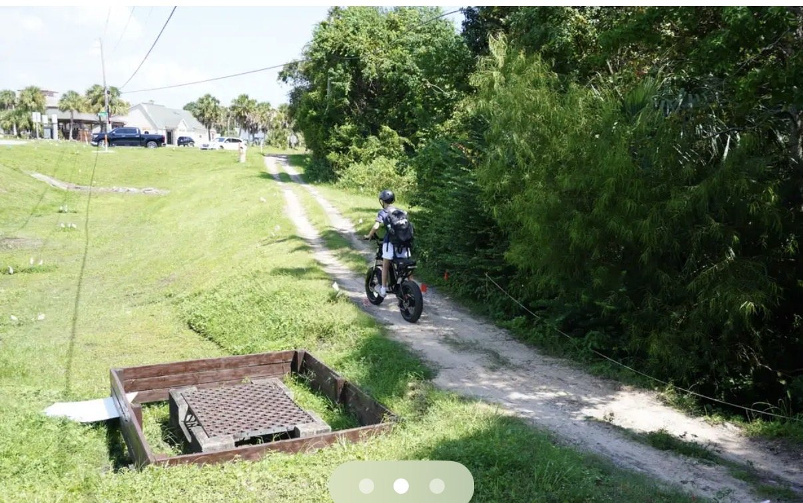
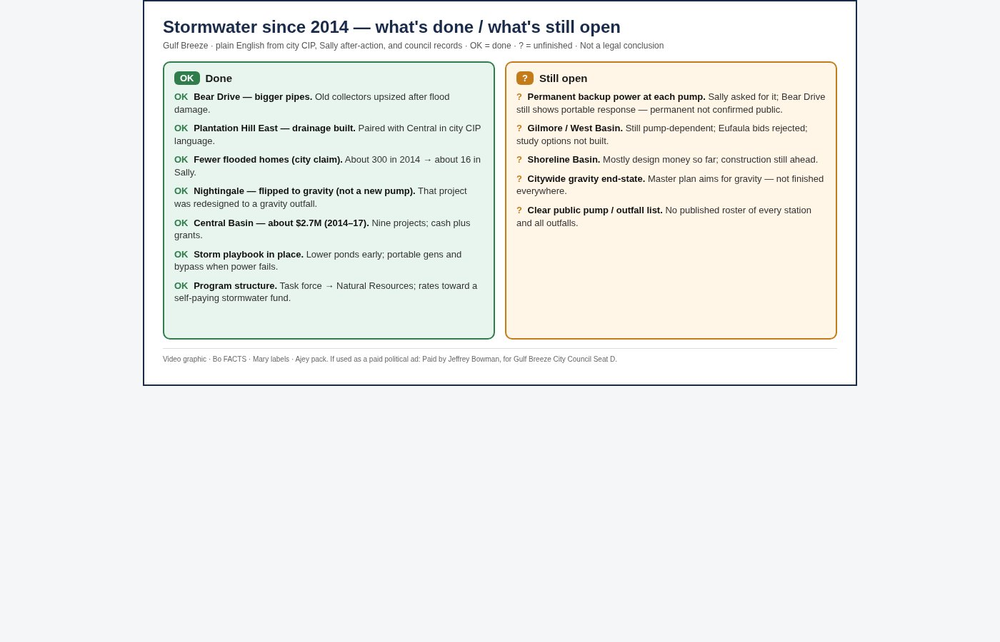

Infrastructure that works
Water. Sewer. Septic. Storms. That is not glamour. That is the city.
When the tap works, nobody thinks about it. When it fails, it is the only thing you think about. Same with a full storm drain and a yard that will not drain.
Gulf Breeze lives with water on three sides and weather that does not wait. Readiness is not a slogan. It is pipes, pumps, lift stations, and a plan you can explain on a porch.
I will ask the simple questions. What is aging. What fails first in a storm. What we are putting off. What it costs to wait.
Stormwater since 2014 — what’s done / what’s still open
Plain English from city CIP language, Sally after-action, and council records. OK means done or credited. ? means still unfinished. Not a legal conclusion.
OK Done
- Bear Drive — bigger pipes. Old collectors upsized after flood damage.
- Plantation Hill East — drainage built. Paired with Central in city CIP language.
- Fewer flooded homes (city claim). About 300 in 2014 → about 16 in Sally.
- Nightingale — flipped to gravity (not a new pump). That project was redesigned to a gravity outfall — not a citywide “no pumps” claim. Bear Drive still has a pump.
- Central Basin — about $2.7M (2014–17). Nine projects; cash plus grants.
- Storm playbook in place. Lower ponds early; portable gens and bypass when power fails.
- Program structure. Task force → Natural Resources; rates toward a self-paying stormwater fund.
? Still open
- Permanent backup power at each pump. Sally asked for it; Bear Drive still shows portable response — permanent not confirmed public.
- Gilmore / West Basin. Still pump-dependent; Eufaula bids rejected; study options not built.
- Shoreline Basin. Mostly design money so far; construction still ahead.
- Citywide gravity end-state. Master plan aims for gravity — not finished everywhere.
- Clear public pump / outfall list. No published roster of every station and all outfalls.

I am Jeffrey Bowman, for Gulf Breeze City Council Seat D. Infrastructure first. Then the rest.